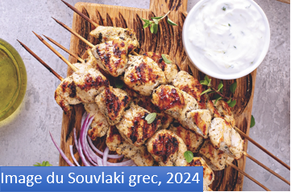
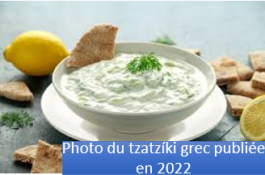

La gastronomie grecque a eu un impact considérable à l'échelle mondiale, en raison de sa simplicité, de sa richesse en saveurs et de l'utilisation d'ingrédients frais et sains. La cuisine grecque a également influencé les régimes méditerranéens, connus pour leurs bienfaits sur la santé.La cuisine contemporaine grecque utilise beaucoup l'huile d'olive, les plantes aromatiques et les légumes, les graines, le pain, le vin, le poisson, les produits de la mer (poulpes, calamars) et des viandes très variées, comprenant la volaille, l'agneau, le mouton, le lapin et le porc.
Voici une sélection de plats grecs connus:
1/-La moussaka:
La moussaka est un plat traditionnel méditerranéen, originaire de Grèce, mais également populaire dans le monde entier. Elle est composée de couches d'aubergines frites, de viande hachée (généralement de l'agneau ou du bœuf) et recouverte d'une sauce béchamel crémeuse, la moussaka est un gratin savoureux, riche en saveurs et réconfortant. Ce plat est souvent servi lors de repas familiaux ou festifs et est un véritable symbole de la cuisine grecque.
2/-Les souvlakis:

Le souvlaki est plus qu'un simple plat ; c'est une institution en Grèce très savoureux. Petites brochettes de viande marinée, généralement de porc ou de poulet, elles sont grillées à la perfection et servies avec du pain pita tiède. Ajoutez une touche de tzatziki et une poignée de tomates fraîches et d'oignons pour une explosion de saveurs en bouche. C'est le snack idéal lors d'une chaude soirée d'été.
3/-Le tzatziki:

Le tzatziki, frais et aillé, est le condiment grec par excellence répartis aujourd'hui dans divers continents. Composé de yaourt épais, de concombre râpé, d'ail pressé, et d'un filet d'huile d'olive, il accompagne aussi bien les viandes grillées que les légumes crus. Sa fraîcheur en fait un allié précieux contre les ardeurs du climat méditerranéen, offrant une pause rafraîchissante au milieu des plats plus épicés.
Retour à l'accueil